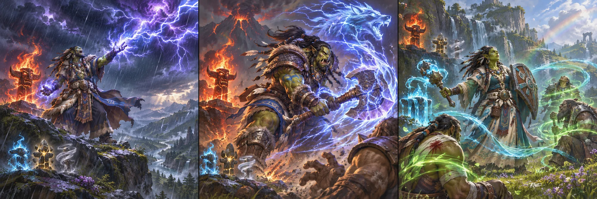
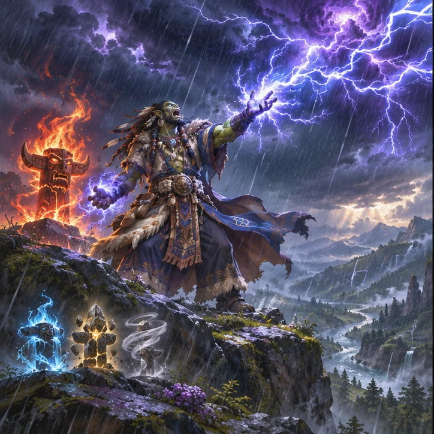
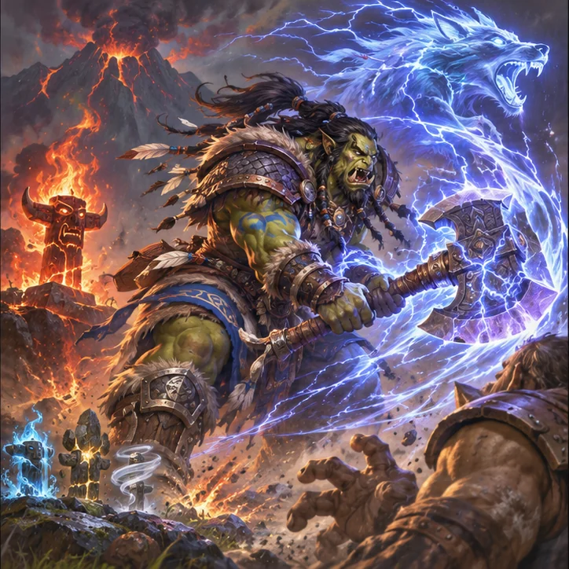
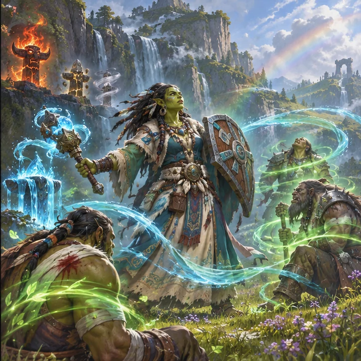

DOSSIER 01 · Elemental
The Lightning Artillery
41/5/5 · 51 POINTS
The glass cannon with a switchboard: many casts, stacked crit and spell hit, a deliberate lightning burst.
ValidatedPerformance experimental
Open full dossier ↘
Three specializations. Nine legal level-60 talent paths. One elementally versatile class — from lightning artillery to shield skirmishing and predictive tank healing.
Cover and specialization artwork: original illustrative fantasy art, not in-game screenshots. No combat numbers are simulated.
WoW Forever is a separate, live 1–60 ruleset. A convincing-looking talent tree or guide can still be wrong when its client tooltip is older than the server hotfix.
| High-impact rule | What to build around |
|---|---|
| Elemental capstone | Lightning Mastery: 15 seconds of shorter Lightning Bolt casts and no Chain Lightning cooldown; not the removed Lava Burst. |
| Lightning Overload | At 3/3, 30% chance for a free half-damage duplicate of Bolt or Chain Lightning, zero extra threat. |
| Stormstrike live | 100% weapon damage, 8-sec cooldown; the next Bolt, Chain Lightning or Earth Shock is empowered by 20% for 12 sec. |
| Maelstrom Weapon live | Each application −20% cast time and mana on next Lightning Bolt only; rank changes activation rate 6→10 procs per minute. Five stacks make it instant/free. |
| Riptide live | HoT only, 12-sec cooldown, +25% to Chain Heal cast directly at its Riptide target. Not an instant emergency burst. |
| Weapon legality | Two-handed axe/mace and staff available; one-hand + shield/off-hand available; no dual wield. |
| Totemic Call | 30-sec cooldown moves active totems to your current location. No live ground-targeted Projection. |
| Early Mana Tide | Row 4 Restoration, available with 16 points total; enables 31 Elemental + 20 Restoration, etc. |
Evidence: Blizzard hotfixes and the current Forever talent / spell datasets. [S1][S2][S3][S4][S6][S7][S17][S18]
Confirmed A talent’s row, rank cap, prerequisite, current tooltip, weapon legality, or an announced change.
Theoretical Exact boss DPS order, marginal weapon stat value, optimal spell-power / attack-power ratio, shield-main-tank readiness and how different proc events combine. These are not established by a tooltip.
How to read performance panels: Later 1–5 bars are qualitative, relative playstyle judgments only, not damage simulations or verified rankings.
Build notation: E / H / R means Elemental / Enhancement / Restoration; 31/20 does not mean two specs — it means talent points invested across two trees.
Sixteen points access the new row-4 utility talents; 31 points unlock a specialization's capstone, leaving 20 cross-tree points at 60.
One per element remains the active footprint, but Forever adds three prepared four-totem configurations and two relocation/recall tools.
Every allocation in the build cards below was checked against all 51 points, rank limits, tier gates and explicit talent prerequisites.
Your shared class system matters more than your signature damage or healing spell. You are a mana user controlling a four-element totem network while weaving weapon imbues, shocks, healing and elemental damage.
Lightning Bolt is the core efficient ranged cast. Chain Lightning trades more mana for cleave and Mastery burst. Flame Shock adds persistent fire pressure; Earth Shock interrupts and generates high threat; Frost Shock slows.
All shocks share a cooldown: pressing Flame Shock is also a commitment not to interrupt immediately afterward. Shock range is normally shorter than maximum talented Bolt range.
Windfury rewards impactful melee swings; Rockbiter favors threat/attack power; Flametongue adds fire damage; Frostbrand helps slow. Your imbue is a weapon choice, while totems help the group.
After the (delayed) November 12 deployment, Windfury Weapon and Windfury Totem both can roll an attack proc. This verifies the interaction, but not an exact combined DPS ranking.
Healing Wave is deliberate and strong; Lesser Healing Wave is faster; Chain Heal heals clustered allies through bounces. Reincarnation is recovery, not a substitute for avoiding death.
Ghost Wolf supports travel and disengagement. Purge, cleansing, Grounding, Tremor, Earthbind and Stoneclaw convert good awareness into encounter victories.
| Action | Baseline role in Forever | Decision / danger |
|---|---|---|
| Lightning Bolt / Chain Lightning | Nature single target / cleave | Bolt for throughput; Chain when 2+ targets justify cost. Do not confuse Overload duplicates with a second mana charge. |
| Flame Shock / Earth Shock / Frost Shock | DoT / interrupt / snare; shared shock timer | Use Earth Shock for enemy casts; choose Frost Shock for spacing and Flame Shock for sustained target time. |
| Healing Wave / Lesser Healing Wave / Chain Heal | Long heal / fast heal / injured-cluster heal | Use predicted damage and rank efficiency, not a memorized one-button rotation. |
| Purge / Cure Poison / Cure Disease | Remove enemy beneficial magic / ally conditions | The best heal is sometimes interrupting or removing the source of damage. |
| Ghost Wolf / Reincarnation | Movement form / recovery after defeat | Improved Ghost Wolf 2/2 permits indoor, instant use. Reincarnation cannot replace a proactive defensive plan. |
| Lightning Shield vs Water Shield | Damage charges versus mana globes | Only one Elemental Shield at a time; Water Shield is a Restoration talent, not an automatic baseline Shaman spell. |
| Stoneskin / Earthbind / Tremor / Grounding | Physical mitigation / slow or root / control break / key spell counter | Choose around enemy mechanics. These effects are not equivalent; Earth slot and Air slot trade-offs remain. |
| Fire Nova | Instant eruption around current Fire Totem | A fire totem must already exist, and enemies must be within the totem-centered blast radius. |
Forever streamlines placing and moving totems, but does not remove their tactical opportunity cost. One Earth, Fire, Water and Air totem slot per Shaman still determines which competing effects you can keep active.
Illustrative positioning diagram; dashed circles are not actual measured totem radii. Check each totem's own 20- or 30-yard tooltip rather than assuming one universal radius.
Earth: Strength of Earth (melee support), Stoneskin (physical mitigation), Earthbind (slow or 5-sec root with Earthbound), Stoneclaw (distraction), Tremor (crowd-control response).
Fire: Searing for single targets, Magma for clustered packs. Both can become the location of Fire Nova.
Water: Mana Spring for sustained mana, Healing Stream for gradual healing, Mana Tide for a short, valuable party regen window.
Air: Windfury and Grace of Air buffs versus Grounding / Windwall utility. Raid nuance: Windfury, Flametongue, Strength of Earth and Grace of Air buff the raid within their proper ranges; Grace of Air can coexist with Windfury or Flametongue from multiple Shamans, but Windfury and Flametongue remain exclusive with each other. Resistance Totems also cover the raid. Defensive totems keep their own ranges and effects.
Forever persistent buff totems received a 5-minute duration and individual totems a 1.0-second global cooldown. Duplicate versions of a buff do not stack from multiple Shamans; a different, complementary buff may. This prevents assuming a five-player-only classic-era buff model. {cite('S6','S7','S16')}
Call of the Elements at level 20 summons up to one totem of each element from a saved bar configuration, with a 3-second cast. Call of the Ancestors at 30 and Call of the Spirits at 40 supply two more saved groups. Presets are ideal before pulls, risky under interrupts.
Totemic Call (level 22, 30-second cooldown) brings current totems to your own present location. It is not the old place-at-cursor Totemic Projection. Walk to the destination first, then Call; avoid dragging an active Magma totem away from enemies.
Totemic Recall (level 20) dismisses totems and refunds 25% of each destroyed totem's mana cost. Recall when the pack dies, when a totem risks pulling, or before a new preset. It is not a full refund or free repositioning.
Select an encounter; the recommendation updates per element. You can pre-program several of these as different calls.
Mana Tide is a fragile Water-slot totem, not a passive buff. At level 60, rank 4 restores 290 mana every 3 seconds for 12 seconds to group members within 30 yards; the cooldown is five minutes. It is group-oriented, not raid-wide. Water Shield is personal: three globes, 2% of maximum mana per triggered globe, and only one can activate every few seconds from an incoming attack or your spell crit. Mindfulness (3/3) continues 50% of Spirit regeneration while casting. Restorative Totems (5/5) improves Mana Spring by 25% and Healing Stream by 50%. {cite('S3','S19','S21')}
Raid buff coverage: Strength of Earth, Windfury, Flametongue and Grace of Air now affect raid members in range; Resistance totems also cover the raid. Grace of Air can coexist with Windfury or Flametongue if multiple Shamans coordinate, while Windfury and Flametongue remain exclusive with each other. {cite('S16')}
Illustrative Fire Nova geometry: 10-yard radius around active Fire Totem; not drawn to scale. Fire Nova was reworked from the older Fire Nova Totem and can pulse repeatedly without dropping a new Fire totem. {cite('S6','S7')}
Three spellcasters can use the same lightning school while differing in burst concentration, party economy and survival-minded control.

Spell rhythm, thunder and deliberate exposure
A caster decides when standing still to generate lightning damage is worth the risk. Forever rewards correct casts with Overload, gives a timed capstone, and makes Earthbind and Fire Nova meaningful tactical choices.
Illustrative artwork only — no live-game ability depiction is implied.
Lightning Bolt supplies the high-frequency rhythm. Elemental Alacrity shortens Bolt and Chain Lightning casts. Lightning Overload (3/3) offers free half-damage extra casts; it does not increase mana usage or generate extra threat.
Call of Flame amplifies Fire Totem, Flame Shock and Fire Nova damage and prolongs Flame Shock. Trial by Fire amplifies Fire Nova and supports longer Magma uptime. Efficient for concentrated packs, not mandatory for every ranged boss.
Earthbound roots nearby enemies for 5 seconds on Earthbind deployment. Eye of the Storm resists cast pushback. Elemental Warding reduces Fire, Frost and Nature damage; Restoration dips fund Mindfulness and Mana Tide.
Important precision: the Chain Lightning Overload roll structure for every jump has not been independently established for the live ruleset. Do not multiply 30% blindly by all chained targets. Elemental Focus is a 10% damage-spell Clearcasting proc; current update notes say Overload activations do not consume it. [S3][S7][S8]
| Elemental build | Single target | Pack/AoE | Mana plan | While attacked | Raid utility |
|---|---|---|---|---|---|
| Lightning Artillery · 41/5/5 | Stand and Bolts; chain Mastery to planned burn | Two talented fire-damage rows plus Overload and Mastery cleave | Convection and spell-hit investment; no Water Shield/Tide | Earthbind, Warding, shield and preplanned positioning | Offensive pressure, basic Shaman totems |
| Stormcaller Support · 31/0/20 | Still full Overload, Fury and Lightning Mastery | Less invested in Nova/Reach; use efficient cleave only | Mindfulness + Water Shield + Mana Tide; monitor group mana | Shield and healing; cannot afford to waste mana support | Mana Tide, stronger Mana Spring and cheaper totem operations |
| Elemental Controller · 31/20/0 | Casts only during safe intervals | Earthbound to hold adds, Fire totem for passive control | Convection + Shamanistic Focus; many utility casts | Instant Ghost Wolf; Earthbind radius, Grounding, dodge/stamina | Interrupts, positioning, defensive totems; fewer uninterrupted casts |
Artillery: attempt Bolt → interrupt threat with Earth Shock → lose cast uptime → retake a fixed lane. Controller: Earthbind root → move sideways instantly in Ghost Wolf → Totemic Call → begin protected Bolt. Neither should pop Lightning Mastery while permanently out of cast range.
Artillery accelerates pulls but may need to drink often; support improves downtime in long content; controller handles difficult elites and PvP pressure but uses more GCDs on survival. A full raid parse is not the same objective as reliable solo quest completion.
Forever Enhancement is not a dual-wield class. It is an argument between slow two-handed weapons, spell-rich Fire Nova setups, and hard-to-kill shield skirmishing — played out swing by swing.

An axe strike is also a mana and spell decision
Melee weapons create the attack cadence. Stormstrike modifies a future spell. Maelstrom turns weapon contact into an instant free Lightning Bolt. The rest of your tree determines how aggressively you press into melee, cast fire or heal yourself.
Illustrative artwork only — no live-game ability depiction is implied.
Slow 2H attacks create large individual swing events and favorable Windfury attack impact. Flurry grants up to 30% attack speed for the next three swings after a melee crit. Rage of the Farseer gives 30% attack speed for 25 sec (3-minute cooldown).
Stormstrike is 100% weapon damage at 8s and buffs your next Bolt, Chain Lightning or Earth Shock by 20% for 12 seconds. Maelstrom Weapon affects your next Lightning Bolt only; five applications make it instant and free.
Mental Dexterity adds 33/66/100% of Intellect as AP; Mental Quickness adds 15/30% of Intellect as spell damage/healing. Improved Stormstrike offers 15 sec of mana regeneration while casting, with dodge/parry resets.
Weapon damage, auto-attacks, Windfury and Stormstrike matter most. More damage per individual swing means large swing-shaped burst. You must remain within melee range to generate Maelstrom.
Feel: wait for the next heavy contact, react to stacks, then instant Bolt.
Keep legitimate two-handed or 1H configurations, but layer Intellect and spellpower alongside attack stats. Your Magma+Fire Nova decisions become important; too many hardcasts may lose melee swings.
Feel: swing → Stormstrike → fire / instant lightning → swing.
Shield improves durability; Rockbiter and Spirit Weapons can increase threat if intentionally tanking a minor enemy. There is no Maelstrom in its 24 Enhancement points, so lightning is hardcast and costs mana.
Feel: measured contact → mitigation → interrupt → emergency heal / kite.
Do not use early-November spreadsheet weights that value Mental Dexterity at 150% Intellect or Stormstrike at 150% / 6s. Current live values pull some weight back from “Intellect converts everything” gearing. Hybrid spellpower/Intellect gearing still has a logical talent basis, but whether it beats a weapon-stat build is untested here. The official hotfix explicitly targeted over-favoring Spell Power and Intellect gear. [S1][S2][S9]
| Windfury Berserker | Elemental Battlemage | Spiritbound Skirmisher | |
|---|---|---|---|
| Allocation | 10/41/0 | 20/31/0 | 0/24/27 |
| Main attack | Slow 2H melee + Stormstrike | Melee, Stormstrike, Fire Nova | 1H + shield, Stormstrike, shocks |
| Full Maelstrom? | YES: 5/5, free instant Bolt at 5 stacks | YES: 5/5, same mechanic | NO: 0/5 — all Bolts are ordinary casts |
| Rage of the Farseer? | Yes | Yes | No |
| Improved Stormstrike? | 2/2 for mana | 0/2 to afford fire talents | 0/2; relies on Restoration sustain |
| Fire Nova | Situational side button | Important part of AoE plan | Budgeted utility / situational AoE |
| Emergency | Kite then heal | Fire controls plus shield swap | Nature’s Swiftness + Healing Wave / shield |
| Trade-off | Less dedicated fire support | Less sustained mana and defensive talent depth | Loses proc-driven free Bolt and deep melee burst |
Swing clock ticking → hit → Windfury possibility → Stormstrike → wait → Maelstrom stack grows → instant Bolt on five → wait for another heavy impact. The dramatic events are frequent enough to matter, but they are not all guaranteed on command.
Block/avoid a hit → watch health → threat from Rockbiter → Stormstrike → interrupt → heal → step out as a totem absorbs pressure. The lack of Maelstrom is a fundamental rotation loss, offset by survival and support.
A Restoration Shaman heals by anticipating damage, positioning allies around Chain Heal, and deciding which tool will save the most health per mana and cast-time commitment.

The same spells, three completely different jobs
An all-in group healer spreads efficient coverage; a roaming medic spends points on positioning and escape; a tank guardian anticipates lethal single-target events. None should treat Riptide as an instant burst heal.
Illustrative artwork only — no live-game ability depiction is implied.
Slow, sizable, efficient when it lands for needed healing. Improved Healing Wave reduces cast time by 0.5 sec; Healing Way increases Healing Wave throughput rather than stacking a debuff from past casts. Excellent for predictive tank care.
Shorter cast for an imminent health deficit. Pay its mana opportunity cost only when waiting for a slower Healing Wave is dangerous; regular use when no one is dying risks endurance.
Chain Heal is a 2.5-second, three-target bounce: each jump heals 50% of the previous; select the first target and cluster carefully. On a party target its jumps remain within that party. Riptide's 15-second HoT gives a +25% effectiveness bonus to Chain Heal cast directly on its target — it has no opening direct heal and a 12-second cooldown.
The Riptide tooltip does not establish that all Chain Heal jumps gain an identical +25% multiplicative bonus; interpret it narrowly as a benefit to casts directly targeting your Riptide-covered ally. [S3][S10][S14][S19][S20]
| Observed problem | Priority action | Why not the tempting alternative? |
|---|---|---|
| Tank damage is predictable in ~2 seconds | Begin Healing Wave now; cancel before completion if no damage occurs | Repeated Lesser Healing Wave wastes mana when a planned Healing Wave fits the window. |
| Tank will die before a normal cast completes | Nature’s Swiftness → Healing Wave, or fast Lesser Healing Wave when NS unavailable | Riptide is an HoT only; it will not rescue the tank with a direct instant burst. |
| Three allies near each other are injured | Chain Heal starting on a Riptide-covered injured ally if practical | Healing Wave on one target ignores useful bounce healing. |
| Raid is spread or moving | Reposition, apply Riptide where its ticks matter, use fast spells after movement | Chain Heal value depends on eligible nearby injured targets; it does not heal magically across the room. |
| Mana is declining across party | Water Shield refresh, economical ranks, Mana Spring then protected Mana Tide | Mana Tide in a safe but distant corner may miss mana-hungry allies; it replaces the Water slot temporarily. |
| Boss begins dangerous magic | Earth Shock if allowed by the shock cooldown, Grounding, Tremor or cleansing as needed | Trying to heal the damage instead of interrupting the cause may be more expensive or fatal. |
| Enemy player pressures healer | Move behind line of sight, Grounding, Earthbind, shield, Healing Focus, Wolf if talented | Holding a long Healing Wave in the open invites pushback and interrupts. |
Has every Restoration talent, including maximum Purification, Totemic Focus, Tidal Mastery, Healing Way and both emergency cooldowns. Group-first, long-form sustain.
Retains the required Riptide chain and Mana Tide/NS but spends 20 points on instant indoor Ghost Wolf, Guardian Totems, Stamina and dodge. Sacrifices some deep healing enhancements for position.
Trades part of group-heal crit / totem depth for Intellect and spell crit from Enhancement, while keeping Healing Way, full Purification, Ancestral Healing, Riptide, Tide and NS. Focuses on timing and tank safety.
These timelines describe decisions rather than simulated global cooldown timestamps. Every character faces the same invented training encounter so the differences in buttons, tempo, mana and positioning are easy to compare.
Archetypal actions, not a fixed rotation or guaranteed proc sequence. A Maelstrom five-stack is conditional. Boss timings are illustrative, not from a real Forever encounter.
Frequent buttons: Lightning Bolt, Chain Lightning, Lightning Mastery, Fire Nova.
Body language: mostly planted at long range, changes totems as the boss/adds move. Mana: offensive casts until the window is over.
Emergency: Earth Shock interrupt, Earthbind, shield/self-heal only after losing safe uptime.
Frequent buttons: Bolt, Water Shield refresh, Mana Spring/Tide, the same lightning burst.
Body language: stands where a fragile Mana Tide can reach several mana users. Mana: a shared resource to budget.
Emergency: healing and mana restoration, knowing that group survival may beat one extra Bolt.
Frequent buttons: Earthbind, Ghost Wolf, Grounding, Earth Shock, then Bolt.
Body language: keeps moving outside threat radius; enemy movement dictates casts. Mana: interrupts and space are valuable purchases.
Emergency: an immediate five-second root and indoor instant Wolf instead of trying to outcast pressure.
| Contrast | Windfury Berserker | Elemental Battlemage | Spiritbound Skirmisher |
|---|---|---|---|
| Boss: 1st 10 seconds | Windfury 2H → auto swing → Stormstrike → wait for Maelstrom | Magma/Searing placement → Stormstrike → Flame Shock or fire support → 5-stack Bolt if ready | Shield → Stormstrike → watch damage / cast bar; do not open with Rockbiter when assigned pure DPS |
| Boss: adds appear | Magma/Fire Nova if close, otherwise maintain weapon uptime | Center the Magma so Nova hits adds; bigger fire commitment | Earthbind or Stoneclaw; add handling and healing over AoE burn |
| Boss: must move | Protect swing uptime, Totemic Call after position changes | Move Fire totem first if the blast zone moved | Instant Ghost Wolf, shield and reposition, NS heal if tank in danger |
| Solo elite: danger | Earthbind → kite → hardcast heal; return to 2H attacks | Fire Nova splashes elite/add, switch to shield for recovery | Shield + Rockbiter + defensive Earth totem + NS/Healing Wave |
| Gameplay texture | Long, satisfying weapon hit + instant proc finisher | Sustained weave of melee, fire and proc lightning | Clutch defensive trades and spaced-out hardcast spells |
Each contact matters more for weapon-based damage, and the delay between contacts is noticeable. If your next swing lands in a moment, hardcasting a Lightning Bolt can sacrifice a swing opportunity; five-stack Maelstrom avoids that dilemma. Weapon speed alone is not a damage ranking because Maelstrom chance scales with speed and target uptime, miss chance, Flurry and stats matter. A spellpower/Intellect setup can cast more valuable non-weapon spells but may forgo weapon impact after the Mental Dexterity reduction.
In contrast, a shield/skirmish build can intentionally take the incoming hit, work with Water Shield and NS, then use Ghost Wolf. The third character is not just a worse Windfury berserker — the goal and failure state are different. The downside is the real loss of free instant Maelstrom Lightning Bolt and deep Enhancement haste.
| Incoming condition | Dedicated Spirit Healer | Mobile Combat Medic | Tank Guardian |
|---|---|---|---|
| Gradual tank damage | Economical Healing Wave rank; refresh Water Shield, time totem upkeep | Healing Wave when stationary; maintain a route to move out | Precast/cancel Healing Wave precisely to swing rhythm; armor-crit support |
| Sudden tank burst | Nature’s Swiftness → Healing Wave; follow-up Lesser HW if urgent | NS → Healing Wave, then reposition if still targeted | NS → strongest appropriate Healing Wave; focus all GCDs on tank |
| Group-wide AoE | Riptide first target → Chain Heal through a damaged cluster, retain mana budget | Riptide → Chain Heal while seeking safe location; less Purification than deep healer | Stabilize tank first; then Chain Heal if tank can survive next swing |
| Debuff / interruptible cast | Cure and Grounding; Earth Shock if heal timing allows | Move to reach debuffed ally, Grounding and Earth Shock in advance | Interrupt only if tank HP safely covers the interruption window |
| Heavy movement | HoT before travel, short casts after stopping, reposition totems | Instant indoor Ghost Wolf → arrive → heal; best spatial toolkit | Stay closer to tank/anticipate destination, reserve NS for movement spike |
| Long low-mana fight | Water Shield, 50% casting regen, efficient ranks and strong Mana Spring/Tide | Mana Tide and Water Shield retained; fewer expensive panic casts through movement | Precise canceled casts, lower-rank Healing Wave, Mana Tide; critical heal armor if it procs |
| PvP healer focus | Grounding/Tremor, Healing Focus and defense/line-of-sight | Earthbind, Grounding, bonus Stamina/dodge, instant Wolf and short healing | Shield and anticipatory tank support; less reliable personal escape than medic |
All 51 points are assigned. Below the build names you can inspect every individual talent rank, the key synergies, totem choices, weapon/gear profile and real combat behavior. This is a validated set of proposed builds, not nine proven best-in-slot meta templates.
The glass cannon with a switchboard: many casts, stacked crit and spell hit, a deliberate lightning burst.
A ranged battery that also recharges the squad; Lightning Mastery and Mana Tide coexist.
Root, run, interrupt, resettle totems, then open a safe casting lane.
A 2H swing cadence punctuated by Stormstrike and free instant lightning.
Melee, lightning, fire totem, nova: keeps Maelstrom but spends heavily in Elemental.
1H/shield + Rockbiter, parries and emergency heals; no Maelstrom or Farseer.
Every Restoration tool at full strength; preplanning and efficient group recovery.
A healer that sprints into position and protects casts, but concedes deep throughput.
Single-target foresight: stronger Healing Wave loop, crit-driven armor, instant rescue.
All the individual ranks below use current Forever talent data and prerequisite arrows; the notes in current Blizzard hotfixes override stale Enhancement numeric tooltip text. The calculator links navigate to the Shaman calculator; no unverified share permalinks are claimed. [S1][S3][S4][S5]
The glass cannon with a switchboard: many casts, stacked crit and spell hit, a deliberate lightning burst.
Fixed-position shock artillery / caster raid DPS
Convection plus Tidal Focus limit expense and missed spells; Thundering Strikes improves spell crit; Elemental Alacrity and Lightning Mastery shorten the Bolt window; Overload adds free, low-threat bolts; Call of Flame and Trial by Fire give a fire-totem AoE branch.
Lightning Bolt, Chain Lightning, Lightning Mastery, Lightning Overload, Call of Thunder, Elemental Fury
Earth: Strength of Earth for melee groups, Earthbind when threatened. Fire: Searing for the boss, Magma for safe packs. Water: Mana Spring as default. Air: Windfury for a melee party or Grounding/Tremor when mechanics demand.
Spell-damage or Nature-damage staff, or caster one-hander + shield; Intellect, appropriate spell hit, spell power, spell crit, then mana sustain. A shield is a true defensive option; weapon weapon-DPS is largely irrelevant to the casting plan.
Pre-place totems without stealing a damage window → assess interrupts and Flame Shock uptime where useful → cast Lightning Bolt repeatedly → Chain Lightning when cleave value warrants mana → activate Lightning Mastery for planned burn, favoring Chain Lightning on multiple targets → Fire Nova only when a Fire totem actually covers the pack.
Prioritize spell hit and uptime before treating crit as output. Overload duplicates cost nothing; Chain Lightning spam during Mastery costs real mana. Hold expensive Fire Nova when a pack will die before it pays off; use potions/regen and Recall obsolete totems.
Stand at maximum safe range, kite with Earthbind, keep Earth Shock ready for dangerous casts, use shield and emergency Healing Wave if targeted. Control is usable but not specialized.
Gains the fullest offensive talent package of these three Elementals and crit/hit cross-tree. Sacrifices Water Shield, Mindfulness and Mana Tide; punishing if a prolonged fight prevents drinking.
Boss burn, cleave dungeons, organized raiding; viable PvP burst but weaker mobility than the controller.
Enjoys deliberate positioning and streaks of free lightning bolts.
Snapshot totems and casting lane; open with Flame Shock if worthwhile, chain Bolts; on boss vulnerability activate Lightning Mastery and swap to Chain Lightning if adds appear; Earth Shock only when interrupt needed.
Lightning at range, Earthbind kite, reserve Earth Shock for elite casts, shield swap when targeted; less reliable than controller under sustained pressure.
A ranged battery that also recharges the squad; Lightning Mastery and Mana Tide coexist.
Long-fight caster / group mana battery
Full 31-point Elemental capstone coexists with 20 Restoration points: Mindfulness continues regeneration while casting; Water Shield has 3 charges and each restores 2% of maximum mana when hit or after your spell crits; Mana Tide restores party mana. Full Overload and Fury preserve actual ranged offense.
Lightning Mastery, Lightning Overload, Mana Tide Totem, Water Shield, Mindfulness, Restorative Totems
Earth: Strength of Earth or Tremor as assigned. Fire: Searing for persistent damage, Magma for controlled adds. Water: Mana Spring → temporarily Mana Tide when mana deficit is meaningful → Mana Spring again. Air: Windfury / Grounding as party demands.
Spell-damage one-hander + shield or caster staff with ample Intellect, MP5 and mana-conscious secondary stats. Favor a spellpower/mana mix over an all-in crit set in long fights.
Read group mana and upcoming damage → Searing/Mana Spring → Lightning Bolt as economical filler → Chain Lightning on worthwhile cleave → Lightning Mastery when target uptime is secure → activate Mana Tide early enough for its full 12 seconds and move the Water slot back afterward.
The distinguishing task is supporting five mana bars, not only your own. Water Shield consumes globes, so refresh it; remember Mana Tide replaces a Water totem. Its 30-yard group range and fragile body require protection.
Shield, protective Earth totem and self-healing. Shorter durations and a larger support workload mean fewer offensive casts than artillery when mechanics are busy.
Gains Mana Tide, Water Shield, Mindfulness and Totemic Focus; concedes deeper Elemental Warding, reach and fire-nova talent choices in its strict 31-point capstone configuration.
Long dungeons and raids with mana pressure; cooperative leveling, controlled farming.
Likes elemental damage but watches the team resource panel as closely as the target.
Sustained Bolts; after group begins spending mana drop Mana Tide at a safe 30-yard position; reestablish Mana Spring, then resume; preserve Earth Shock for a crucial interrupt.
Kite with baseline Earthbind, use Water Shield and heal more readily, expend mana strategically instead of chasing maximum burst.
Root, run, interrupt, resettle totems, then open a safe casting lane.
PvP-style positional controller / resilient ranged hybrid
Earthbound roots for 5 seconds on Earthbind placement; Earth’s Grasp widens Earthbind radius and strengthens Stoneclaw; Guardian Totems helps damage reduction and Grounding cycling; Improved Ghost Wolf is instant/indoor at 2 points. Full Overload remains accessible, but only 2/5 Elemental Fury.
Earthbound, Earth’s Grasp, Improved Ghost Wolf, Guardian Totems, Eye of the Storm, Lightning Mastery
Earth: Earthbind/root or Stoneclaw, Stoneskin versus melee. Fire: Searing as safe passive pressure. Water: Mana Spring or Healing Stream. Air: Grounding against casters; Tremor for fear/sleep/charm situations; damage buff only when safe.
Caster one-hander + shield, Stamina, Intellect, spell hit and spell power; swap to more aggressive caster staff only when distance is secure. Weapon imbue can serve situational melee emergency, not sustained melee DPS.
Survey enemy reach → Earthbind/root, step out → Grounding/Tremor preemptively as needed → lightning cast if a safe gap opens → Earth Shock to interrupt, Frost Shock to prolong kite after shock cooldown → Totemic Call to move remaining totems to your new position → Ghost Wolf for a hard reset.
Mana is spent defensively on shocks, healing and re-toteming; Convection and Shamanistic Focus help. Lightning Mastery should wait for an actual cast opportunity instead of being wasted while chased.
The defining strength: shield, dodge and stamina talents, instant indoor Ghost Wolf, enlarged Earthbind and rooting, Grounding and self-heal. Still vulnerable to dispels, immune mobs and coordinated focus.
Gain physical survival and mobility, lose 20 points of Restoration mana support and several points of deep Elemental damage efficiency. Controller is a tactical playstyle, not a claim of equivalent boss DPS.
Battlegrounds, duels, solo elites, overworld questing and mechanic-heavy dungeons.
Prefers winning through terrain, interrupts and spacing instead of a stationary parse.
Use Grounding, Earthbind for adds, move out of ground effects and instantly Ghost Wolf; cast during windows when protected, not whenever the theoretical priority says.
Root with Earthbind, step outside melee range, Bolt, Earth Shock cast, Ghost Wolf reposition, move Totems, then repeat as cooldowns permit.
A 2H swing cadence punctuated by Stormstrike and free instant lightning.
Two-handed Windfury executioner / weapon-first DPS
Flurry rewards melee crit; Stormstrike on an 8-second cycle amplifies the next Lightning Bolt, Chain Lightning or Earth Shock; full Maelstrom makes a five-stack Lightning Bolt instant and mana-free; Rage of the Farseer adds 25 seconds of attack-speed pressure; Improved Stormstrike gives in-cast mana regeneration.
Windfury Weapon, Stormstrike, Flurry, Maelstrom Weapon 5/5, Rage of the Farseer, Improved Stormstrike
Earth: Strength of Earth while in melee group; Earthbind on kite. Fire: Searing on bosses, Magma → Fire Nova for packs. Water: Mana Spring for resources or Healing Stream defensively. Air: Windfury Totem for melee-party value; Grounding when necessary.
Slow high-weapon-damage two-handed axe or mace. Prioritize weapon upgrades, Strength/Attack Power, weapon hit, crit, Stamina, then useful Intellect for Mental Dexterity/Quickness. No off-hand weapon and no dual wield.
Choose imbue → maintain weapon swings (avoid idle movement) → Stormstrike in melee → spend five-stack Maelstrom on Lightning Bolt, preferably while Stormstrike’s +20% spell buff is live → Earth Shock for interrupt, fire nova when totem covers multiple targets → Rage of the Farseer during sustained melee access.
Weapon attacks provide free damage; Maelstrom five-stacks provide free Lightning Bolt, while Shamanistic Focus discounts shocks. Improved Stormstrike gives spell-casting regen for 15 seconds; re-toteming and AoE can still drain the bar.
Toughness, Ghost Wolf, emergency Healing Wave and defensive swaps. Offense requires melee uptime; when forced out, reposition, do not spam expensive low-value casts.
Most complete weapon/Maelstrom package here; less fire-totem amplification and less healing support than the other builds. Burst is proc-shaped, not guaranteed at exact times.
Leveling, solo farming, dungeon melee, PvP burst and organized melee group support.
Loves heavy axe swings and a sudden instant lightning finisher.
Windfury and autos → Stormstrike → react to five Maelstrom stacks with instant Bolt → Rage during long melee uptime → reposition fire totem as boss moves.
Open with Earthbind spacing, commit slow Windfury swing, Stormstrike, use free Bolt, and self-heal only after buying space.
Melee, lightning, fire totem, nova: keeps Maelstrom but spends heavily in Elemental.
Fire-and-lightning melee battlemage / hybrid AoE
20 points in Elemental fund Call of Flame (+Fire Totem, Flame Shock and Nova) and Trial by Fire (Nova damage/cooldown). Elemental Alacrity speeds hardcast Bolts. The 31 Enhancement points still buy both five-rank Maelstrom and Rage—unlike the shield skirmisher.
Stormstrike, Maelstrom Weapon 5/5, Rage of the Farseer, Call of Flame, Trial by Fire, Fire Nova
Earth: Strength of Earth or Earthbind depending on crowd control. Fire: Magma for sustained pack AoE, Searing for boss damage; both power Fire Nova if in range. Water: Mana Spring. Air: Windfury for melee or resist/utility choice.
Two-handed weapon with good damage and a mixture of Intellect, spell damage and AP; a caster 1H + shield can be used for safer spell-oriented pulls, at a real weapon-DPS cost. Gear balance is experimental after the November 10 Mental Dexterity nerf.
Drop Magma where enemies will remain → enter melee, Stormstrike → cast Flame Shock if a durable target justifies it → Fire Nova from the current Fire totem when several mobs are in radius → when five Maelstrom applications arrive, instant Lightning Bolt, preferably under Stormstrike → cast hard Bolts only during safe gaps.
Big resource collision: Fire Nova, shocks and hardcasts compete with totem upkeep. Elemental Focus may cover a damage spell; Maelstrom covers only Lightning Bolt, not Nova or Chain Lightning. Budget mana before the pack.
Can choose shield temporarily and off-heal, but has fewer Toughness/Ghost Wolf defensive points than berserker. Facing multiple mobs without guard requires totem positioning.
Gains strong AoE fire decisions and spell-casting identity, loses Improved Stormstrike mana sustain and enhanced mobility. Hybrid gear optimization is not independently validated.
Dense dungeon packs, themed hybrid play and farm pulls; testing-needed in raids.
Wants to weave melee with blazing totems, not merely auto-attack.
Magma only if boss remains stationary; otherwise Searing. Stormstrike → instant Bolt at five stacks. Consider Flame Shock/fire support, but never let a hardcast waste melee uptime.
Use Fire totem + Nova for pressure; kiting is less specialized, so switch to shield and heal when needed.
1H/shield + Rockbiter, parries and emergency heals; no Maelstrom or Farseer.
Shield-and-spirit survival melee / support skirmisher
Spirit Weapons raises threat with Rockbiter active and grants parry. Anticipation adds dodge, Toughness adds Stamina, Improved Ghost Wolf adds escape; Restoration offers Water Shield, Mana Tide, Healing Focus and Nature’s Swiftness. At Enhancement 24 it has Stormstrike but no Maelstrom Weapon and no Rage of the Farseer.
Rockbiter Weapon, Shield, Spirit Weapons, Improved Ghost Wolf, Stormstrike, Nature’s Swiftness, Water Shield, Mana Tide
Earth: Stoneskin or Earthbind/Stoneclaw; Fire: Searing safe pressure; Water: Mana Spring, Mana Tide for party, Healing Stream if healing is needed; Air: Grounding/Tremor priority before offensive buffs.
One-handed axe/mace + shield, Stamina, armor, Intellect, dodge and mana sustain; weapon damage still matters for Stormstrike, but low death risk and reliable spells are a larger design goal.
Let shield/mitigation handle ordinary hits → Stormstrike for melee pressure/threat → Earth Shock to interrupt, with the shared shock cooldown in mind → Earthbind/Stoneclaw against several foes → Nature’s Swiftness + Healing Wave in an emergency → Ghost Wolf when a disengage is safer than tanking.
No instant free Bolt from Maelstrom: hardcast Lightning Bolt means stopping melee and paying mana. Improved mana from Mindfulness, Water Shield and Mana Tide supports healing/control rather than burst.
The build’s point: shield, dodge, stamina, Grounding, Stoneclaw, Wolf and instant emergency Healing Wave. Rockbiter increases threat, which is helpful only when you intentionally hold the enemy.
Sacrifices deep Enhancement offense for survival, mobility and healing. Rockbiter threat/parry do NOT confer a raid-tank mitigation kit, reliable boss taunt or validated endgame tank viability. Situational low-level group tanking remains experimental.
Solo elites, PvP skirmishes, difficult quests, ad hoc dungeon off-support; not a recommended raid main tank.
Enjoys survival puzzles, shield swapping and helping rather than peak damage.
If a DPS role is required, prefer non-Rockbiter imbue to avoid threat. If explicitly assigned add-control/offtank in a safe dungeon, Rockbiter + shield, interrupt, kite, and communicate limitations.
Rockbiter shield tanking, Stormstrike and short shocks, nature-swiftness instant heal when needed, Earthbind → Ghost Wolf reset as your mana recovers.
Every Restoration tool at full strength; preplanning and efficient group recovery.
Full-depth healer / group and raid sustain
Every Restoration talent is purchased: full Purification and Healing Way for output, full Mindfulness and Totemic Focus for resources, critical-heal Ancestral Healing, Water Shield, Mana Tide, Nature’s Swiftness, Riptide and full totem enhancements.
Riptide, Chain Heal, Healing Wave, Water Shield, Mindfulness, Mana Tide, Nature’s Swiftness, Purification
Earth: Strength of Earth or Stoneskin/Tremor; Fire: Searing only if mana allows; Water: Mana Spring as baseline → Mana Tide when party mana is truly low; Air: Windfury group buff, Grounding for threatening casts.
High healing power and Intellect, sufficient MP5/Spirit for long fights, healing crit for Ancestral Healing, plus Stamina to live. One-handed healer weapon + shield is usually practical; choose staff for unusually good healing stats.
Forecast damage and lay out Riptide on the intended Chain Heal starting target → precast/cancel economical Healing Wave on tank → use Chain Heal on clustered damaged players, preferring a first target bearing YOUR Riptide → use Lesser Healing Wave if immediate single-target response is needed → Nature’s Swiftness + Healing Wave for a lethal spike.
Choose efficient ranks and stop overheals. Keep Water Shield globes active; sustain with Mindfulness and timed Mana Tide, never when the party is already full mana. Swap water totem back after Tide.
Grounding, Tremor, defensive Earth totems, Healing Focus pushback resistance, shield and Reincarnation. Avoid wasting GCDs on low-impact DPS.
All-in healer completeness and group support; no bonus instant Ghost Wolf, no Enhancement defensive talent package; comparatively little damage while solo.
Dungeon and raid healing, organized PvP healing, high-stakes team support.
Likes orchestrating the whole group and managing a renewable resource ecosystem.
Pre-HoT tank, rank-scaled Healing Wave during single-target baseline, Chain Heal when splash arrives, Tide during group mana drain, instant Healing Wave to rescue.
Not ideal solo: use Searing, shocks and Healing Wave to win slowly with very high safety and mana patience.
A healer that sprints into position and protects casts, but concedes deep throughput.
High-mobility healer / roaming PvP medic
20 Enhancement gives Improved Ghost Wolf, Anticipation, Toughness and Guardian Totems. Resto at precisely 31 retains Riptide, Mana Tide, Water Shield, Nature’s Swiftness and some Purification—but not full throughput or full Totemic Focus.
Instant indoor Ghost Wolf, Riptide, Nature’s Swiftness, Mana Tide, Guardian Totems, Water Shield
Earth: Earthbind to peel, Stoneskin vs auto-attacks, Tremor as needed; Fire: Searing only when safe; Water: Mana Spring/Healing Stream then Mana Tide; Air: Grounding priority to block enemy casts.
Healing weapon + shield, Stamina, Intellect, healing power and MP5; value resilience via armor and mobility over a few throughput stats. Avoid choosing AP weapons simply because points sit in Enhancement.
Identify next danger zone → instant Ghost Wolf across the arena/room and place Grounding/Earthbind near the threatened ally → refresh Riptide → Lesser Healing Wave while pressured → Chain Heal for clustered damage → Nature’s Swiftness + Healing Wave for a spike.
Movement itself can reduce cast opportunities; Water Shield and Mindfulness still help, but only two ranks of Purification means more heals may be necessary. Mana Tide should be protected against enemy players.
Distinctive survival: shield, movement, extra Stamina/dodge, Grounding cooldown reduction and healing pushback protection. Wolf remains a form, so timing is a decision rather than moving and casting heals simultaneously.
Gains emergency mobility and control, loses full Tidal Mastery, full Purification and some dedicated-healer economy. A highly situational PvP/dungeon variant, not a generic throughput winner.
PvP, movement-heavy dungeons, risky group questing and escort encounters.
Loves traversing danger to rescue teammates rather than standing in a healing stack.
Step out of AoE instantly with Wolf, return near tank after safe; keep Riptide Chain Heal anchor; use NS in emergency and coordinate mana Tide.
Self-heal, root, run, heal; uses minimal damaging casts; slower but difficult to trap.
Single-target foresight: stronger Healing Wave loop, crit-driven armor, instant rescue.
Tank-focused healer / anticipatory single-target protection
41 Restoration retains Purification5, Healing Way3, Riptide, Nature’s Swiftness, Mana Tide, and Ancestral Healing. Enhancement10 adds Intellect and general spell crit—useful for tank-heal critical armor—but loses full Tidal Mastery and several group-economy points.
Healing Wave, Healing Way, Nature’s Swiftness, Riptide, Ancestral Healing, Purification
Earth: Stoneskin or Strength of Earth for tank; Tremor if boss fears. Fire: Searing only if safe. Water: Mana Spring/Tide; Air: Windfury to buff tank or Grounding before an announced dangerous cast.
Healing-power one-hander + shield; emphasize high-throughput Healing Wave scaling, Intellect and adequate MP5, then healing crit for Ancestral Healing uptime. Has 5/5 Ancestral Knowledge and 5/5 Thundering Strikes cross-tree.
Observe tank hit rhythm → begin an economical Healing Wave before expected damage → cancel if no damage lands → land fully ranked Healing Wave for predictable heavy hits → use Riptide chiefly as a supplemental HoT/Chain Heal anchor, NEVER as an instant burst heal → NS + Healing Wave when the next hit is lethal.
Precasting and cancelling is the core efficiency tool. Prefer lower Healing Wave rank when incoming damage is gentle; maintain Water Shield and use Mana Tide without putting tank safety at risk.
Position close enough to respond while outside cleave; use shield, Healing Focus and Earth Shock on dangerous enemy spells if not sacrificing tank healing. Crit-driven Ancestral Healing adds armor when it procs.
Superior emphasis on tank stability and empowered Healing Wave, but less holistic totem effectiveness and no Enhancement Ghost Wolf. Similar tree to group healer; playstyle and equipment focus create real differentiation.
Dungeon boss healing, raid tank assignments, dangerous elite support, slower sustained tank damage.
Likes reading damage patterns and saving lives before health bars crash.
Precast Healing Wave into incoming tank swing, cancel and restart if safe, Riptide for HoT not rescue, emergency NS→HW, only Chain Heal when spread damage actually warrants.
Support a tanking friend with predictively timed Healing Wave and Grounding; minimal DPS.
Shaman is a class in which different equipment is not just a bigger stat number. A weapon upgrade can make Enhancement feel more physical; a shield can convert an Elemental caster into a survivor; a healing set turns the same mana pool into lifesaving efficiency.
| Level band | What you learn / unlock | Elemental route | Enhancement route | Restoration route |
|---|---|---|---|---|
| 1–9 | Early shocks, Lightning Bolt, Healing Wave and the first totems | Use spells at range, but expect mana downtime | Mix hard weapon hits with low-rank shocks to avoid drinking | Heal friends / use melee and Shocks when alone |
| 10–19 | Talents begin; specialize in mana, crit or weapon support | Convection / Concussion improve normal Bolt leveling | Early Thundering Strikes or Intellect; acquire useful weapon | Early Improved Healing Wave / Tidal Focus |
| 20–29 | Fire Nova and Call of Elements / Totemic Recall; Totemic Call at 22; row-4 talents can open | Earthbound can open at 16 tree points; learn to place fire totem | Stormstrike available once 15 points are invested in Enhancement, earliest level 25 | Mana Tide available with 16 Restoration points, earliest level 25 |
| 30–39 | More prepared totem loadouts; Tier-5/6 choices open | Lightning Overload and crit synergy become central | Maelstrom can open at 26 Enhancement points, earliest level 35 | Healing Way / Nature’s Swiftness if deep Restoration |
| 40–60 | 31-point capstones available; dual specialization at 40 (50 gold); final 51-point mix at 60 | Lightning Mastery or a radically split hybrid | Rage of the Farseer if 31 Enhancement; choose full Maelstrom or support sacrifice | Riptide at 31 Restoration; refine raid / tank / mobility role |
Talent row unlocks are based on points invested and can be delayed by cross-tree spending; the “earliest” statement assumes committing your points straight into that tree. The Legacy “Talented” perk can alter the first-point timing; the nine allocations are validated against the ordinary 51-point level-60 budget.
| Stat or item property | Elemental | Enhancement | Restoration |
|---|---|---|---|
| Spell power / Nature damage | Boosts eligible Bolt/Chain/shock output; very direct | Good for Battlemage; opportunity cost versus weapon damage after the 10 Nov balance pass | Damage power rarely replaces healing power for a main healer |
| Healing power | Strong emergency/off-heals but not main ranged offense | Useful on Spiritbound survival/support; wasted for raw melee parse | Primary healing throughput; interacts with rank choice and overheal |
| Intellect | Larger mana pool and caster synergy | Mental Dexterity AP at 100% Int for 3/3; Mental Quickness spell/heal power at 30% Int for 2/2; no longer old 150% | Mana capacity, crit interaction, Guardian bonus with Ancestral Knowledge |
| Spirit / MP5 | Mindfulness in support build adds value while casting; MP5 dependable sustain | Supports long spell-rich/defensive fights; Improved Stormstrike matters where taken | Mindfulness + Water Shield + Mana Tide underpin long encounters; MP5 and Spirit have different in-combat behavior |
| Spell hit / weapon hit | Reduces missing damaging casts, especially on bosses; Tidal Focus gives hit | A mixed build needs to watch both types of attack; missing Stormstrike interrupts synergy | Healing casts typically do not require hit; Tidal Focus’s hit matters for solo damage / Earth Shock utility |
| Critical strike | Call of Thunder, Elemental Fury and Thundering Strikes build lightning burst | Flurry and Windfury swing pressure; also spell crit where relevant | Healing crit enables Ancestral Healing armor uptime and bigger saves |
| Weapon speed / weapon damage | Mostly a stat stick as a caster | Core to 2H swing/Windfury profile; Maelstrom PPM adjusts proc chance by speed | Mostly healing stats and shield defense, not weapon DPS |
| Armor, shield, Stamina | PvP/solo sturdiness; may trump minor damage gain | Strong on Spiritbound; two-hand carries opportunity cost of shield | Shield, stamina, movement and line-of-sight keep a healer alive |
Windfury Berserker: excellent style fit. Elemental Battlemage: attractive if weapon damage and stats remain strong while casting. Spiritbound: would sacrifice its shield, dodging/mitigation plan and survival goal.
Elemental: clean primary upgrade. Battlemage: possible complement to Mental Quickness but compare lost weapon damage. Tank Guardian: might lose dedicated healing power and tank-save throughput.
Controller: survival-first spellcasting. Spiritbound: defining defensive gear. Restoration: excellent when healer survival matters. Windfury Berserker: major sacrifice of swing-heavy offense.
| Content / objective | Elemental | Enhancement | Restoration |
|---|---|---|---|
| Leveling 1–60 | Can ranged-pull safely, especially Controller; drinking is a bottleneck | Generally natural solo weapon/auto-attack rhythm, good leveling convenience | Can level alone slowly; most rewarding with allies to heal |
| Solo elites | Earthbound Controller can kite; support can self-sustain | Berserker kills, Spiritbound survives, battlemage controls packs with fire | Very safe but slow when damaging solo |
| Dungeon DPS | Chain Lightning + Fire Nova can be potent when group packs well | Windfury melee and Fire Nova AoE; resource discipline key | Mostly healing, DPS only during safe gaps |
| Raids | Offensive caster + vital buffs; support split adds group mana | Melee utility plus weapon or hybrid damage; setup dependent | Group Chain Heal vs tank guardian Healing Wave are genuinely different assignments |
| Farming packs | Controller root/kite + Magma / Nova; high drinking cost possible | Battlemage fire AoE; Berserker good sequential kills | Can survive pulls but weaker kill speed; reserve mana |
| PvP | Controller excels at spacing; Artillery relies on creating cast windows | Spiritbound tactical durability vs Berserker burst chase | Mobile Medic most movement-focused, Dedicated healer most full-toolkit |
| Experimental play | Mana Tide Elemental, deep mobility cross-tree | Spellhance fire and shield/Rockbiter, with tank limits | Movement-hybrid, single-target tank crit/healing guardian |
| Faction / race | Racial themes relevant to Shamans | Why you might choose it |
|---|---|---|
| Alliance — Dwarf | Stoneform for physical/debuff defense; Artisan’s Precision provides additional hit; Big Game Hunter situational versus beasts | The sole Alliance Shaman; durable utility with offensive reliability |
| Horde — Orc | Blood Fury for an attack/spell power window; Hardiness anti-stun; Shatter Curse helps against curses/banes | Burst weapon/caster and defensive PvP utility |
| Horde — Tauren | War Stomp AoE stun; Endurance health; Plainsrunning mobility flavor | Particularly thematic melee/skirmisher and emergency-heal windows |
| Horde — Troll | Berserking attack/cast haste, Beast Slaying and regeneration tools | Caster/healer burst windows and active solo utility |
| Horde — Skyborne (Windshaper) | Wind Blessed haste, Elemental Insight on elemental foes, Skysight / Walk on Air travel tools | Movement and tempo; this is the Horde Skyborne, not the Alliance variant |
Racial descriptions are intentionally about mechanical identity, not an invented race DPS order. Forever changed the racial package; use the current live racial tooltip for precise cooldowns. The available races are Orc, Tauren, Troll, Horde Skyborne and Dwarf. [S13]
Dual specialization unlocks at level 40 for 50 gold from a class trainer. Practical pairings: Windfury Berserker + Dedicated Healer, Lightning Artillery + Elemental Controller, Battlemage + Tank Guardian. Maintain separate gear sets rather than pretending attack-power rings double as endgame healing rings. [S11]
If a battlemage is repeatedly out of mana before adds die, shorten the Fire Nova cycle or equip more mana. If Spiritbound cannot safely hold a specific dungeon boss, hand the tank role to a dedicated tank. If Mobile Medic's lower Purification becomes a healing wall, switch to Dedicated Healer. Adapt builds to actual evidence.
Pick a specialization or preferred content, then inspect the comparison bars and jump to the exact 51-point talent dossier. The indicators are editorial expressions of playstyle, not DPS, HPS or probability calculations.
| You want to… | Start with… | Why / what to watch |
|---|---|---|
| Unleash continuous lightning | Lightning Artillery | Most caster-focused 41/5/5, reliable Overload and Mastery windows; manage drinking. |
| Charge into aggressive melee | Windfury Berserker | Slow 2H and full Maelstrom/Rage; relies on melee access. |
| Combine spells and weapon swings | Elemental Battlemage | Fire Nova + 5 Maelstrom, full Rage; experimental stat balance after hotfix. |
| Prioritize AoE packs | Battlemage or Lightning Artillery | Magma / Fire Nova and Chain Lightning; placement/mana decide value. |
| Level efficiently solo | Windfury Berserker or Elemental Controller | Weapon tempo for sequential mobs; control for dangerous elites. |
| Heal and support friends | Dedicated Spirit Healer | Strongest full-tree toolkit among proposed builds; Mana Tide and Chain Heal anchor play. |
| Play defensive tactical PvP | Elemental Controller / Mobile Combat Medic | Earthbound + Wolf controller or Wolf + Riptide healer; space over meter. |
| Try unusual experimental builds | Spiritbound Skirmisher / Stormcaller Support | Shield + Rockbiter survival or Lightning Mastery + Mana Tide; neither implies raid-tank or DPS parity. |
| Keep a dedicated tank alive | Tank Guardian | Anticipatory Healing Wave and crit-armor support rather than automatic Chain Heal spam. |
Elemental is not just a ranged caster: it can be artillery, mana logistics, or positional control. Enhancement is not just a melee hitter: it can be a Windfury berserker, an elemental fire battlemage, or a shielded rescuer that deliberately lacks Maelstrom. Restoration is not just a healer: it can optimize group health, move through danger to rescue teammates, or prevent the next tank death before anyone else notices it coming.
The spellbook creates the options. The talents, the weapon, the four active totems and the player's actual decisions create the Shaman.
References are linked directly so individual ability claims can be checked again after new live hotfixes. The source priority is Blizzard live updates → current server-aware talent / client data → Forever-specific guides → early beta as history only.
Validated Nine point budgets and listed prerequisite arrows, two-handed/no dual wield rule, current Stormstrike / Mental Dexterity / Maelstrom hotfix, current Riptide HoT, four-slot totem preparation, Call/Recall semantics, and core tooltip relationships.
Not validated Optimal boss DPS ranking, proc independence on Chain Lightning bounces, perfect rotations under arbitrary buffs, exact stat weights, test-dummy HPS, and shield-Rockbiter raid-tanking feasibility.
Nov. 2–3: Lava Burst removed, Lightning Mastery introduced, Totemic Call replaces Projection, Riptide loses direct heal, Overload becomes 10/20/30%.
Nov. 10 announced, Nov. 12 deployed: Stormstrike 150%/6s → 100%/8s; Mental Dexterity reduced; Maelstrom PPM/rank model revised; imbues and weapon totems can trigger together. Blizzard confirmed delayed worldwide activation at 10:45 a.m. PST on November 12.
Nov. 11–13: Flametongue Totem rank 2 fix, Rage of the Storm 16 Strength/3.6 speed, and client build 1.60.1.70938 on November 13. No newer Shaman talent redesign has been verified in that client.
Illustrations generated specially for this guide; none is labeled as a live Forever gameplay screenshot. In-game archival talent screenshots and a Forever gameplay screenshot can be examined via archival beta talent screen evidence or GameStar's Forever screenshot gallery; historical images must not be used as authoritative proof of current post-launch tooltips.